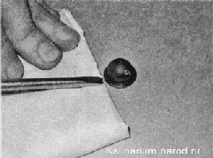

Форсунки стеклоомывателя заменаСнимать форсунки показанным ниже способом следует только в случае их замены, так как при этом будут сломаны фиксаторы. Если требуется снять форсунки омывателя ветрового стекла, не повредив их фиксаторы, необходимо демонтировать обивку капота , а для снятия форсунки омывателя заднего стекла потребуется снять дополнительный фонарь сигнала торможения. Последовательность работы 1. Подготавливаем автомобиль к выполнению работы. 2. Шлицевой отверткой, подложив под нее ткань, сложенную в несколько слоев, поддеваем и извлекаем форсунку из отверстия капота. 3. Отсоединяем от форсунки трубку. 4. Надеваем трубку на новую форсунку так, чтобы распылитель форсунки был направлен на ветровое стекло. 5. Устанавливаем форсунку в отверстие капота и нажимаем на нее сверху, до фиксации. 6. Тонкой иглой поворачиваем распылитель форсунки так, чтобы струя жидкости была направлена на стекло. 7. Аналогично заменяем другую форсунку и форсунку омывателя заднего стекла. |